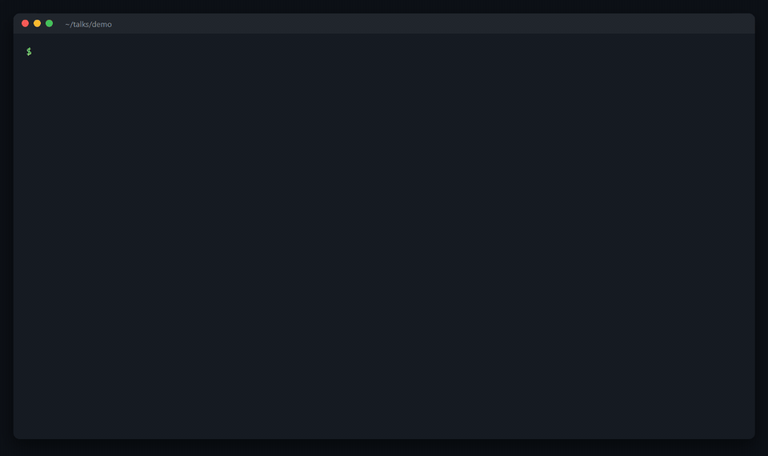

Clean up talk recordings, by hand or through your agent.
Recording a talk in one take means restarting sentences, slides
and clicks. Cutting those by hand takes hours, and one bad join
ruins a clip. rostrum finds them, shows every proposed cut with
its reason, and leaves the decision to you.
It grew out of the scripts I used to edit my
Conf42 talk,
which cut a single 60-minute take down to 33 minutes.
Finds spoken cues such as “redo”, retakes, repeats, long pauses and dead air, and flags unclear speech for you to check.
Lets you play each join in a local review page, keep or cut it, and nudge its edges.
Renders frame-accurate joins with ffmpeg and checks sync at every join, on Windows, macOS and Linux. It also runs as an MCP server, with plugins for Claude Code and GitHub Copilot CLI and an extension for Gemini CLI.
Demo

A 58-second synthetic demo talk. The terminal shows the real
output, trimmed to the main lines.
Try it
uv tool install rostrum
rostrum init talk.mp4
Needs Python 3.11 or newer and ffmpeg 6.1 or newer;
pipx install rostrum works too. The first run
downloads a speech model of about 480 MB. After that,
everything runs on your machine.
Full setup guide